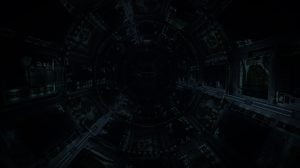

The Deptford Prize Jolts as she reenters normal space, a big blue ball of fire fills the cockpit view. “Scanning” Jennifer starts the scan procedure and steers the ship around the blue star. Blue light and shadows dancing around the cockpit. “Scan complete, I got a signal source, 127ls away” Jennifer points the Deptford Prize towards the Signal source. “Shall we check it out?” Jennifer smiles. Engalo targets the signal source. “Let’s do a deeper scan and then decide” -Degraded emissions- flashes on the screen. “Could be anything, some radioactive dust particles or something probably” Engalo sits back in he’s chair. “Ahh.. What the hell. Let’s check it out. Drop a couple of kilometres away from it tho Jennifer. Don’t want radioactive stones scratching the paint” The Deptford Prize jolts again as it drops out from supercruise. The sight meeting them is jaw dropping. A big structure of bendt metal, some kind of dust and a big debris field fills the whole view.
“What the ….” Jennifer stands up from her co pilots chair and walks up to Engalo. “Have you seen anything like that before?” Jennifer asks. “Not even in my dreams” Engalo answers still staring at the massive object. Jennifer leans over Engalo and zooms out the scanner to full range, still no end to the debris field. “Calculate the the diameter of those rings on the end there” Jennifer quickly plots the scanner to measure the rings. “Four kilometres in diameter” She looks at Engalo. “That would make them the same size as the Orbis stations right? Do you think it’s made by humans?” Engalo studies the massive structure. “Could be, it does look like something we could build, but I have never seen something this big before. It’s 9 kilometres in length” Engalo powers the throttles and moves inn closer ever so slowly. Jennifer walks back down to her co pilots chair. “Radiation within tolerable levels. Setting shields to full power just in case” Debris fly past the cockpit windows, slowly spinning in to the darkness as the Asp’s shield repel some of them. The Deptford Prize manoeuvres trough the thick layer of dust, metal and other former parts of the object. Banking down flying in close to the first torus. “There are no markings of any kind, no numbers, letters or anything…” Engalo stares out of the cockpit window, scanning the structure with he’s eyes as they fly over the object. Moving trough the thick layer of dust and debries, on what seems to be the fattest part of the object and then just as the visibility almost turns to zero they fly over the edge of the station and a letterbox opening reveal itself. Engalo manoeuvres the Deptford Prize and stops just in front of the letterbox opening. It looks like the gateway to some kind of black abyss. Jennifer turns on the Deptford Prize’s lights. about 300 meters inn they see massive black doors securing the entrance to the object. “Engalo, there looks to be some kind of writing on those blast doors” Jennifer directs the lights inn trough the letterbox opening as Engalo slowly creeps Deptford Prize forwards towards the opening. “I can’t make sense of them, try getting a little closer” Jennifer’s voice sounds excited and tense. “Alright, going in” Engalo ease forward trough the opening.
A big clank thunders as the doors starts opening. Engalo cringed from the sound. “The doors are opening…” A faint blue light emerge from behind the opening doors and a large docking bay comes in to view. Not a soul in sight, no ships and no robots or any other automated systems… nothing. Just a big cold empty docking bay several kilometres in length and width. A faint orange light almost at the back wall blinks towards them. “.- … –. .- .-. -..” The pattern repeats over and over. “There is a repeating pattern Engalo, do you have any idea what it means?” Engalo counts the blinks. “I believe it’s some sort of blink code. I read about something like that when I was a child back on Earth. I can’t make sense of this tho” The big door closes behind them. “Guess we have to find out now… don’t think we have the firepower to shoot trough those doors…” Engalo looks around at all the landing pads trying to decide which of the empty pads he should land on. “There is an atmosphere in here, 78.09% nitrogen, 20.95% oxygen, 0.93% argon, 0.039% carbon dioxide definitely breathable” Jennifer says. After just pointing the nose of the Deptford Prize down Engalo lands on the medium pad closest to them. The landing gear of the Asp magnetize to the ground as there is no gravity.

The cargobay door opens, Jennifer and Engalo walks down. The scale of the dark station glooming overhead and the smell of stale, old and metallic air makes the whole place feel spine-tingling. “I know I shouldn’t say this…. but this place, just gave me a bad feeling” Jennifer looks at Engalo. He turns towards her “What could possible go wrong darling” Engalo smiles… “You brought your gun, right?” Jennifer rapidly unholster her gun. “Of course, and five extra power cells”
To be continued…